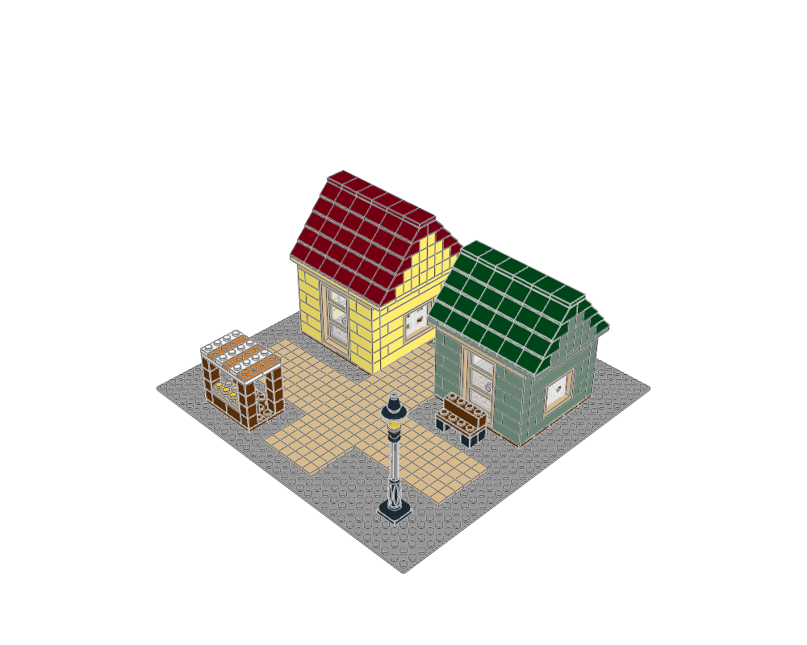

Commercial and hospitality · minifigure
Marigold Market Court
Two different shops and a produce stall share one pedestrian court.
712 placements · 10 modules
MPD · Plan · Construction guide
Where the details belong
Keep the middle court open; repeat cream trim but vary roof colour and storefront width.
Avoid: Do not mirror every detail or fill the court with furniture.
Checks · BOM · Visual review